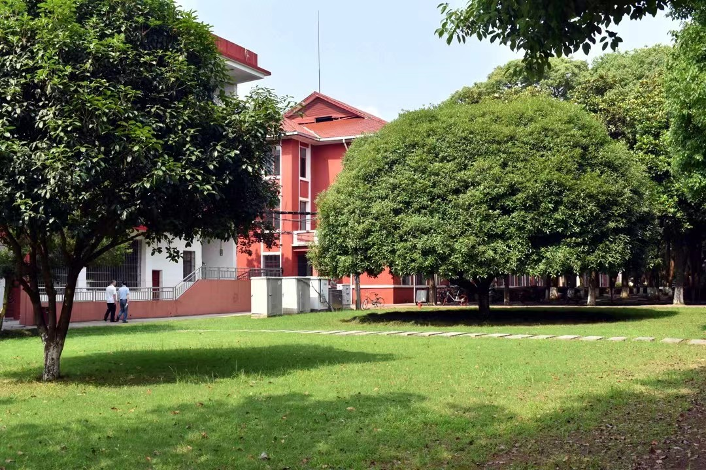

邯郸职业教育中心成立于2006年6月，是国家级重点职业中学，第一批国家示范性中等职业学校。隶属于邯郸市教育局。
学校是由原邯郸市第一职业中学、邯郸市职业工业中专、邯邢冶金矿山局技工学校、邯郸市第四职业中学合并组建而成，四所学校在各自的发展历程中积累了丰富的办学经验，为社会培养了大批技能人才。
近期，正职邯郸全国文明城市创建时期，全市上下齐动员，为创城工作奉献着自己的青春。我校青年志愿者也不例外，5月14日，在老师的带领下来到龙湖公园打扫卫生、清理垃圾，为创城尽一份力。
小行动大收获，事实亦如此。愿这份精神得以传承，愿这份文化得以宣扬，愿每一个人都努力为邯郸全国文明创建贡献自己微薄之力。。
广大初三毕业生:邯郸市职教中心2022年招生报名即将开始，现将报名注意事项公示如下：
一、报名时间:2022年7月2日开始
二、报名地点:校园内（7月2日自北门进入，东门离开，7月2日以后从南门进校）
三、注意事项:
1.根据邯郸市疫情防控要求，需要出示健康码、行程卡、测量体温后即可进校。 2.学生持准考证、身份证、户口本到校园内现场报名（校外未设任何报名点）。 3.报名不交任何费用。住宿费300元/学期和学费2300元/年均在开学后视户口性质统一收取（农村户口、县镇非农业户口三年学费全免，市内三区城市户口需交学费）
邯郸市职教中心
2022年6月29日
公交
乘车路线：邯郸市联纺东路539号邯郸市职教中心，火车站乘9路，新东站乘59路，三十一处乘49路，工人文化宫乘9、20路公交车到职教中心站下车。学校官网
招生热线电话：0310-1561264 5051976。
火车
邯郸市内有邯郸、邯郸东、武安、马头四座火车站，东西南北各有站，几乎涵盖了周边各大环境。
邯郸站，京广铁路、邯长铁路、邯济铁路、邯黄铁路的枢纽站。 地址：河北省邯郸市邯山区浴新南大街75号 电话：0310-1564853 交通：市内公交13路、21路、25路、33路可到职教中心站
邯郸东站，中国铁路北京局集团有限公司管辖的客运站，也是京广高速铁路上的中间站。 地址：河北省邯郸市丛台区秦皇大街 电话：0310-2452422、7572242 交通：有2路; 9路; 10路; 12路; 18路; 19路;4路公交经过职教中心
武安站，是中国铁路北京局集团有限公司管辖的三等站的 地址：河北省邯郸市武安市武安镇 电话：0310-4019090 交通：途径武安火车站的公交车有5路、6路。
马头站，是中国铁路北京局集团有限公司邯郸站管辖的二等站。 地址：河北省邯郸市邯山区马头镇中大街 电话：0310-7937372 交通：车票10元左右，行程约1小时；打的60左右，行程约半个多小时。